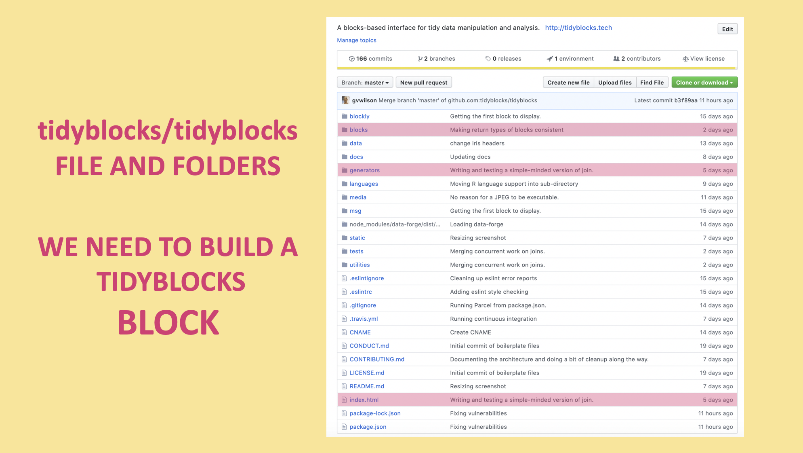
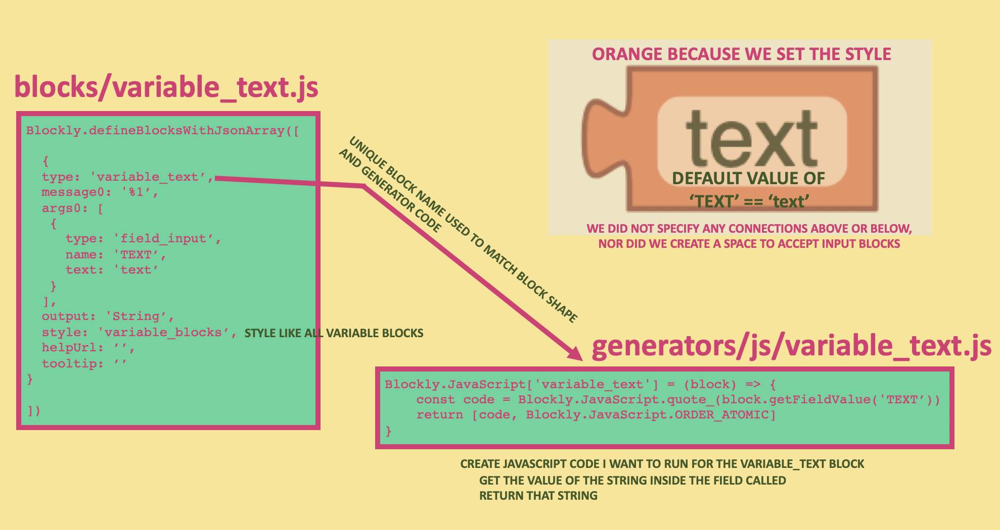
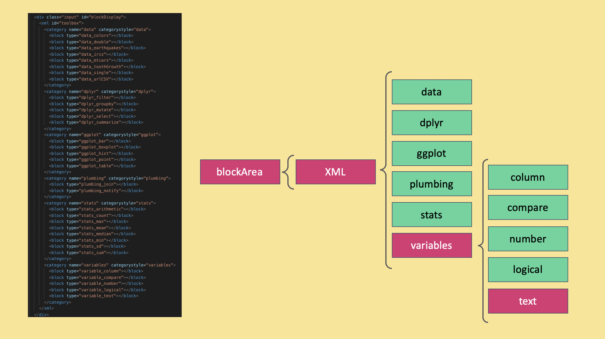
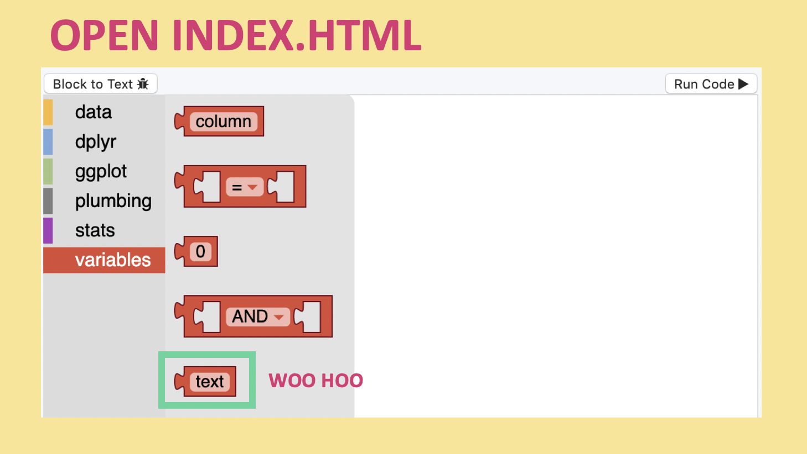

The TidyBlocks project is open source - meaning I’d love for people to contribute! I’ve posted in abstractions in order to solidify a mental model of how blockly works, but I want to make this more concrete with an example. In this post I will outline the architecture of the TidyBlocks repository by walking you through all the files needed to:
- Create the shape of the text block
- Create the JavaScript code to be executed when the text block runs
- Have that block show up in the GUI’s toolbox
blocks
The blocks folder contains a single script for each block’s shape. The file is given the same name as the block itself. Each block has the prefix according to its category. I’ve called the block that you can input a string variable_text; the variable prefix denotes that the block should be a part of that category’s library of blocks, and text refers to the blocks function.
//
// Visuals for text field block.
//
Blockly.defineBlocksWithJsonArray([
{
type: 'variable_text',
message0: '%1',
args0: [
{
type: 'field_input',
name: 'TEXT',
text: 'text'
}
],
output: 'String',
style: 'variable_blocks',
helpUrl: '',
tooltip: ''
}
])
This block is defined in JSON. Its type is the unique identifier we give to each block, here variable_text. The block’s arguments are a field_input which we’ve given the ID TEXT and set the string text as its default. We’ve limited the output type to String and set the style of the block according the variable_blocks. Each category has its own colors which can be found in tidyblocks/utilities/tb_themes.js. The tool-tip is currently empty, but if we were to add type string here this would show up when the user hovers over the variable_text block. For those interested, adding useful tool-tips would be a great first pull request!

generator/js
Just as we called our file variable_text.js in the block folder, we give it the same name in the generator/js folder; the folder containing scripts for the code the text block will generate.
Blockly.JavaScript['variable_text'] = (block) => {
const code = Blockly.JavaScript.quote_(block.getFieldValue('TEXT'))
return [code, Blockly.JavaScript.ORDER_ATOMIC]
}
Blockly.JavaScript is how we tell our program that if the user imports the text block then hits run, if we want the block to run JavaScript, this code will be executed. If you want the program to run PHP or Python you’d need to specify that you’re creating the code for that language. You’d also need to back up a folder and put those scripts in their own language specific folder. Need an example? Check out some of the generator files in the R folder to see how they differ from their JavaScript sibling.
There are a couple of functions to grab what the user input inside a block. Here we use block.getFieldValue('TEXT') to access the string that was typed inside the blocks field with the ID TEXT. And that’s pretty much all we need the text block to do!
Index.html
So I have these two scripts - how do I add this block to my workspace? The two scripts need to be placed within the index.html in the root of the repo. If you navigate to the bottom of the page, you’ll see I’ve been importing the two files associated with each block within script tags. I’ve used spaces to clearly define the scripts associated with each block.
Now we can scroll up.

Find the div that contains the blockly workspace: blockDisplay. Within the display we have an XML tree containing each category, then the blocks we want to place in that category. We put the code <block type="variable_text"></block> within the variable category. Now blockly knows to go look for the generator and block shape files to make that block.
And there she is! Right in our toolbox where we want her.

Up next, actually running the code to see if our generator is doing what we want it to do, and making sure the code we run is executed inside the proper div, not just in the console.